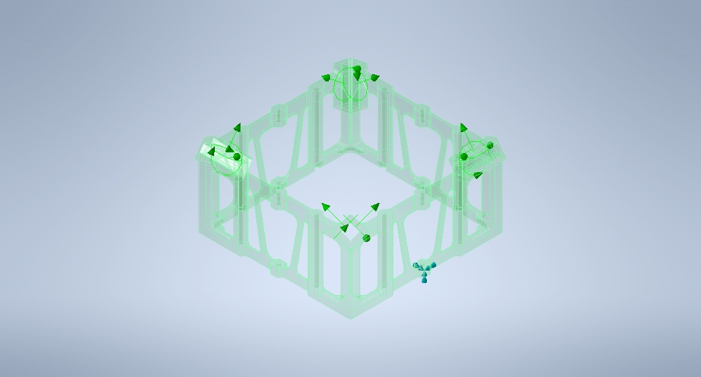
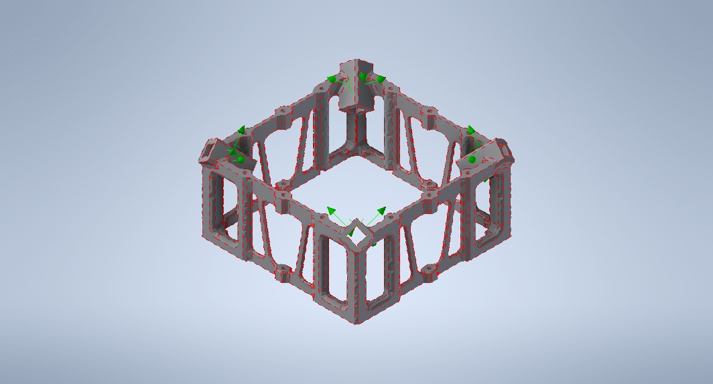
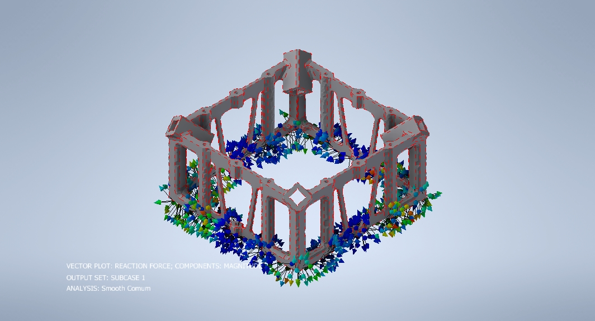
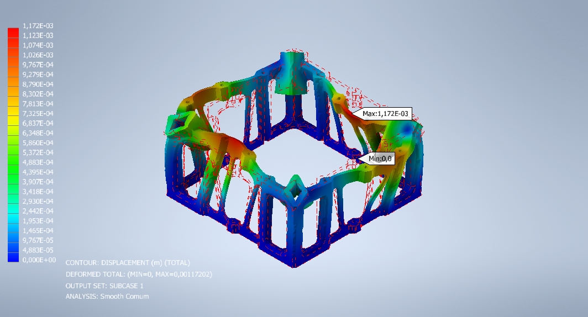
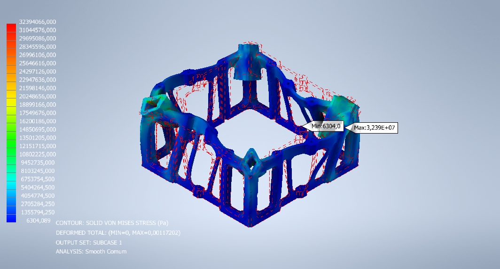
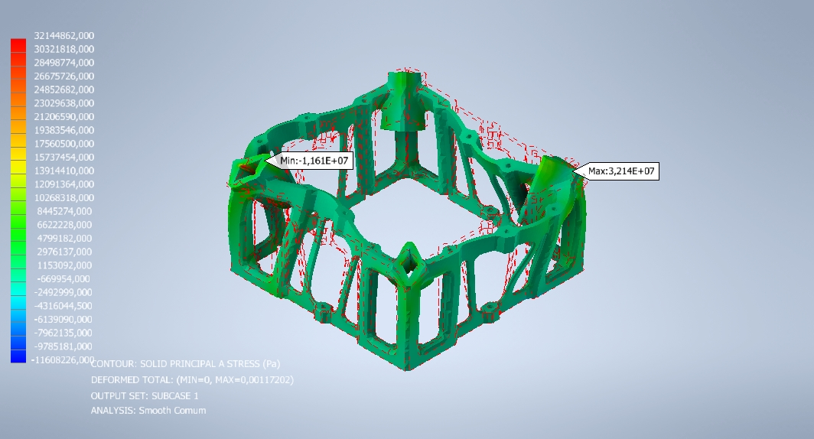
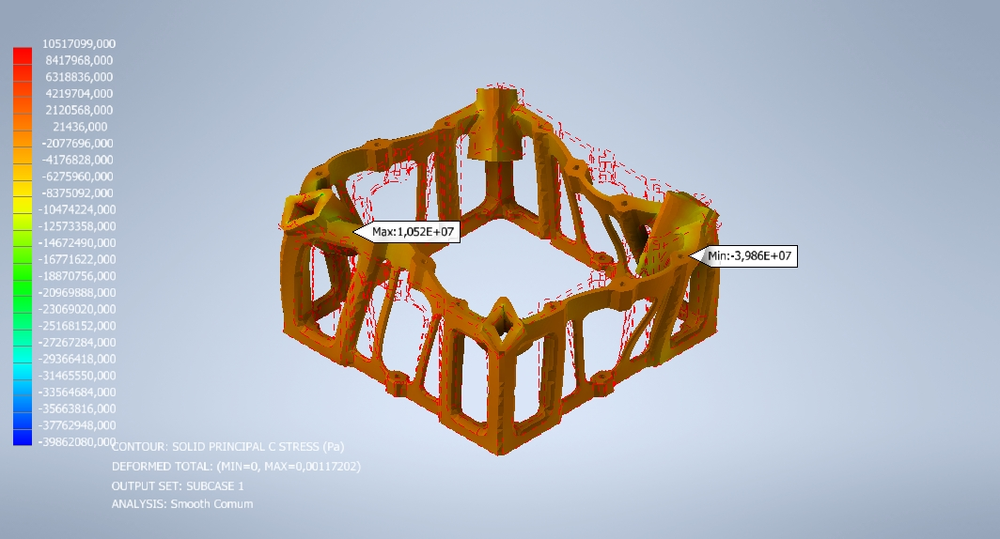

| Date: | 11/13/24 |
| Author: | Fabio P. Cardoso |
| Subject: | Analysis Report |
| Prepared For: | Fabio P. Cardoso |
| Software Used: | Autodesk Nastran Version 18.2.0.35 |
Table 3.1.2 Part Mass Properties
Table 3.3.1 Isotropic Material Definition
Table 3.3.2 Anisotropic Shell Element Material Definition
Table 3.3.3 Anisotropic Solid Element Material Definition
Table 3.3.4 Orthotropic Shell Element Material Definition
Table 3.3.5 Orthotropic Solid Element Material Definition
Table 3.3.6 Hyperelastic Element Material Definition
Table 3.4.1 Element Initial Distortion Summary
Table 4.1.1 Applied Load Vector Resultant
Table 4.2.1 Reaction Load Vector Resultant
Table 5.1.1 Displacement Summary
Table 5.1.2 Peak Displacement Component Summary
Table 5.1.3 Stress Results Summary
Table 5.1.4 Solution Error Measure and the Relative Stress Error Summary
The report documents design and analysis using Autodesk Nastran engineering simulation software. A linear static analysis was performed using the finite element model shown in the figure below. The model is divided into 1 property group(s). The units system is m-N-s. The model consists of a total of 137396 nodes and 81630 elements.

Figure 1 - Finite Element Model
1. Displacements are small.
2. Follower forces are ignored.
| The model is divided into 1 property group(s). Details for each group are given in Table 3.1.1. | |
| 1. | The bounding box for all positioned bodies in the model measures 0,1711 by 8,631E-02 by 0,1711m along the basic coordinate system x, y and z axes, respectively. |
| 2. | The total mass of the model is 0,4154 kg. |
| 3. | The model center of mass is located at (2,073E-02, 1,993E-02, -2,39E-02) m. |
| Property Group | Material | Bounding Box (m) | Mass (kg) | Volume (m3) | Nodes | Elements |
| SOLID 16 | MAT 3 | 0,1711, 8,631E-02, 0,1711 | 0,4154 | 1,69E-04 | 137396 | 81630 |
| Property Group | Material | Mass (kg) | Center of Mass (m) | Moments of Inertia (m) |
| SOLID 16 | MAT 3 | 0,4154 | 2,073E-02, 1,993E-02, -2,39E-02 | 2,009E-03, 3,492E-03, 2,009E-03 |
The model contains 0 contact region(s).
- Adaptive stiffness scaling is enabled.
| Material ID | E | G | NU | RHO | ALPHA | T-REF |
| 3 | 1,188E+09 | 4,042E+08 | 0,47 | 2458,0 | 0,0 | 0,0 |
The finite element mesh is shown in the figure below. The model consists of a total of 137396 nodes and 81630 elements.
| Property Group | Property Type | Aspect Ratio | Recommended Limit | Taper Ratio | Recommended Limit | Skew Angle | Recommended Limit | Warping Angle | Recommended Limit |
| SOLID 16 | TET | 10,8 | 100,0 | 0,0 | 0,0 | 173,2 | 80,0 | 0,0 | 0,0 |
Figure 2 - Finite Element Mesh
The finite element environments are shown in the figures below. Applied structural loading is summarized in Table 4.1.1. Applied load vector resultants are defined in the basic coordinate system. Moments are summed about location (0.0,0.0,0.0).
| Resultant Force(N) | Resultant Moment(N m) | |||||
| Subcase | XT | YT | ZT | XR | YR | ZR |
| SUBCASE 1 | 0,1164 | 49,07 | 9,603E-02 | 1,177 | 3,707 | 1,013 |
Reaction loads are summarized in Table 4.2.1. Reaction load vector resultants are defined in the basic coordinate system. Moments are summed about location (0.0,0.0,0.0).
| Resultant Force (N) | Resultant Moment(N m) | |||||
| Subcase | XT | YT | ZT | XR | YR | ZR |
| SUBCASE 1 | -0,1164 | -49,07 | -9,597E-02 | -1,177 | -3,707 | -1,013 |

Figure 3 - Applied Load

Figure 4 - Reaction Load
The solution to the Environment defined in Section 4 applied to the Model defined in Section 3 is given below. The program selected the PCGLSS linear solver. Total solution time was 36.48 seconds.The largest solution error measure was 1,194E-09 for SUBCASE 1.The largest solid element relative stress error was 0,112 for SUBCASE 1.The results are summarized in the table(s) and figure(s) below.
| Subcase | Minimum Displacement (m) | Property Group | Maxmium Displacement (m) | Property Group |
| Subcase 1 | 0,0 | Part 1 | 1,172E-03 | Part 1 |
| Displacement Components (m) | Rotation Components (m) | |||||
| Subcase | XT | YT | ZT | XR | YR | ZR |
| SUBCASE 1 | 9,942E-04 | 6,935E-04 | 1,168E-03 | 0,0 | 0,0 | 0,0 |
| Subcase | Minimum Principal Stress (Pa) | Property Group | Maximum Principal Stress (Pa) | Property Group | Maximum Von Mises Stress (Pa) | Property Group |
| Subcase 1 | -3,986E+07 | Part 1 | 3,214E+07 | Part 1 | 3,239E+07 | Part 1 |
| Subcase | Solution Error Measure | Shell Element Relative Stress Error | Solid Element Relative Stress Error |
| SUBCASE 1 | 1,194E-09 | n/a | 0,112 |

Figure 5 - OUTPUT SET: SUBCASE 1 -- DEFORMED TOTAL: (MIN=0, MAX=0,00117202) -- CONTOUR: DISPLACEMENT (m) (TOTAL)

Figure 6 - OUTPUT SET: SUBCASE 1 -- DEFORMED TOTAL: (MIN=0, MAX=0,00117202) -- CONTOUR: SOLID VON MISES STRESS (Pa)

Figure 7 - OUTPUT SET: SUBCASE 1 -- DEFORMED TOTAL: (MIN=0, MAX=0,00117202) -- CONTOUR: SOLID PRINCIPAL A STRESS (Pa)

Figure 8 - OUTPUT SET: SUBCASE 1 -- DEFORMED TOTAL: (MIN=0, MAX=0,00117202) -- CONTOUR: SOLID PRINCIPAL C STRESS (Pa)
A linear static analysis was performed using the Autodesk Nastran Version 18.2.0.35 finite element solver on the akovagckx structure. The finite element model contained mainly Part 1 elements and consisted of 412188 degrees of freedom.1 loading condition was analyzed.The maximum displacement was 1,172E-03 m (load case Subcase 1)The maximum von Mises stress was 3,239E+07 (load case Subcase 1).
| Aspect Ratio | |
| Ratio of an element's longest side to its adjacent side. | |
| Bi-Directional Slide | |
| Prevents contacting regions from separating or closing but permits sliding (zero coefficient of friction | |
| Bounding Box | |
| A three-dimensional cube aligned to the global x,y and z axes that exactly contains a body or assembly. | |
| Follower Forces | |
| Loads that follow the motion of the structure as it deforms. | |
| General Contact | |
| Models standard nonlinear surface contact with friction if specified. | |
| Relative Stress Error | |
| A measure of mesh convergence (values greater than 0.01 may indicate that further mesh refinement is required in areas with large stress gradients over a few elements). | |
| Rough Contact | |
| Nonlinear contact that allows separation and closure but does not permit sliding (infinite friction). | |
| Skew Angle | |
| The angle between the lines that join opposite midsides of a quadrilateral face. | |
| Solution Error Measure | |
| A measure of solution quality (values less than 1.0E-07 are generally considered acceptable). | |
| Taper Ratio | |
| The ratio of the areas on the two sides of a diagonal of a quadrilateral face. | |
| Warping Angle | |
| The extent to which a quadrilateral face deviates from being planar. | |
| Welded Contact | |
| Prevents contacting regions from sliding, separating, or closing. | |